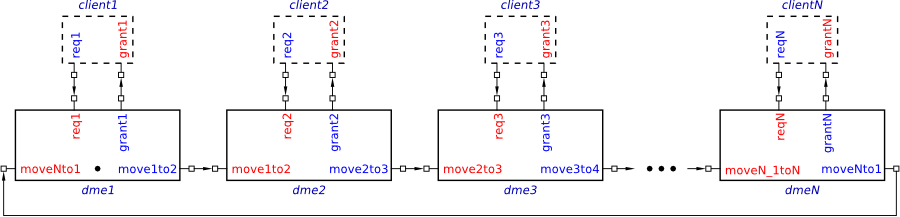
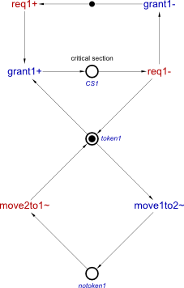
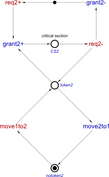
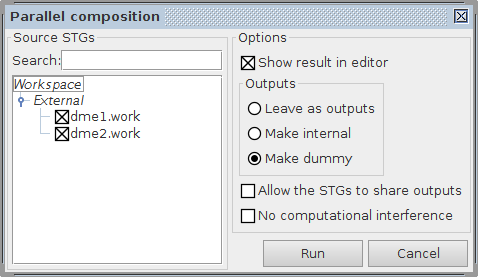
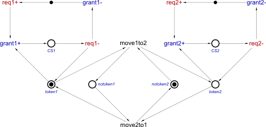
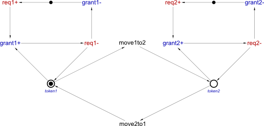
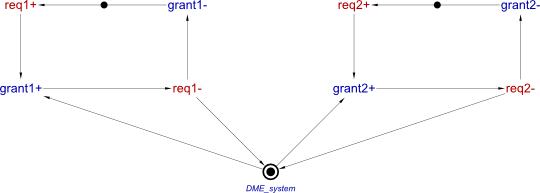

Table of Contents
Modelling with Signal Transition Graphs: Distributed Mutual Exclusion
In the exercises below you will use Signal Transition Graphs (STG). STGs are similar to Petri nets, except for the following:
- Short-hand drawing conventions is used:
- Transition boxes are omitted – only labels (actions) are drawn.
- Places with one incoming and one outgoing arc are not shown – transition-to-transition arcs are drawn instead (a token is put directly on such an arc if the original place is marked).
- The actions are partitioned into
inputs,outputsandinternal; there are alsodummytransitions that do not correspond to any actions and serve for the convenience of modelling, e.g. one can “hide” a redundant action by replacing its transitions with dummies without otherwise changing the behaviour of the system. - The actions have directions:
+,-, or~; e.g.a+means actionais asserted anda-means it is withdrawn. Note that transitions ofa+anda-must alternate in every execution – otherwise the model is ill-formed. The~is used for actions that do not have this assert/withdraw semantics.
Distributed Mutual Exclusion: Token Ring Architecture
The aim of the exercises below is to model a system that guarantees Distributed Mutual Exclusion (DME). There are N clients that should access a shared resource in a mutually exclusive way. To do that, N almost identical DME elements are connected in a ring. The first DME element is slightly different from the others in that it initially holds a “token” (do not confuse with Petri net tokens). This token is passed around the ring in the clockwise direction.

From time to time, a client may wish to use the shared resource. To do that, it requests permission from the corresponding DME element by asserting req: action req+ (note that from the point of view of the DME element this is an input, and so is shown in red). If the DME element does not hold the token, it has to wait for one. After the token has arrived (or if DME element has already been holding it), the DME element can grant the request to the client, by asserting grant: output action grant+. At this point the client knows that it is safe to enter the critical section and use the resource, as the other clients cannot be using it. Note that the DME element is not allowed to pass the token to the next DME element in the ring until the client notifies it that it has exited its critical section.
A request from the client may arrive when the DME element is about to pass the token to the next DME element in the ring. Hence, the DME element has a choice: it can either grant the request holding the token for longer or to pass the token and grant the request on the next round – either behaviour is acceptable. This choice expresses arbitration, as the DME element arbitrates between the client’s request and the decision to pass the token – which of them was first. If these events happened close in time, an arbitrary decision is made. If the system is to be implemented as a circuit, it will inevitably enter a metastable state from time to time, and so one has to use a Synchroniser, a Mutual Exclusion element or a similar specialised circuitry that can handle metastability.
Having finished using the resource, the client withdraws the request: input action req-. In response, the DME element withdraws the grant: output action grant-.
The sequence of events req+, grant+, req-, grant- forms a so called 4-phase handshake – this is a very common mini-protocol in asynchronous systems.
At this point the client is allowed to send another request, and the DME element is allowed either to pass the token to the next DME element in the ring or hold it for longer (and perhaps process another request from the client).
The advantage of this Token Ring architecture is that it can be implemented in a distributed way.
Exercise 1: Compositional Modelling
Model a DME system comprised of two DME elements. Start by creating STG models of two DME elements as shown below. These two models should be saved in separate files, and you could use copy-and-paste to reduce the amount of work. Note that the names of the actions are slightly different in these two STGs (to make them unique), and that the initial markings reflect that the first DME element holds the token while the second does not.


Directional actions (i.e. those with + or -) are used to interface clients, whereas passing of the token between DME elements is modelled abstractly by undirected (i.e. ~) actions (these actions could be implemented by handshakes when the model is refined, but this is not required for this exercise). When place CS1 or CS2 is marked, the corresponding client executes its critical section. Note that short-hand notation is not used for these places, as they have special significance to the designer.
Note the choices between outputs, e.g. in the first DME element place token1 is in the presents of grant1+ and move1to2~ transitions.
These two DME elements communicate by executing shared actions moveXtoY~. Hence, the model of the overall system can be constructed compositionally, using the parallel composition operation. This functionality is accessible via the Tools→Composition→Parallel composition [PComp] menu. In the dialog window (see below) tick the names of the files to be composed, and select Outputs / Make dummy. The latter will turn the fused transitions into dummies, as they represent internal workings of the system.

Note that the files dme1.work and dme2.work must be opened in the same instance of Workcraft.
The resulting STG model of the system should appear in a new tab. It is also shown below, after some manual editing to improve visual representation, in particular:
- The layout was manually modified to resemble the layout of the original STGs.
- Places
CS1,CS2,token1andtoken2have one incoming and one outgoing arc, and so were not shown in the resulting composition. They can be made explicit by selecting the corresponding transition-to-transition arcs, clicking Transformations→Make places explicit and renaming. - The dummy transitions were renamed to correspond to the
moveXtoYtransitions in the original STGs.

Exercise 2: Simulation and Verification
Simulate your model. Try to re-create the following scenarios:
- First client sends a request that is immediately granted, and then the handshake is completed. Check that the token cannot be passed to the next stage while the client is in its critical section.
- Second client sends a request that cannot be immediately granted, as the corresponding DME element has no token yet. When the token arrives, the request is granted, and the handshake is completed.
- First client sends a request, after which the system arbitrates between issuing a grant and passing the token to the next stage of the ring; the latter is chosen, and the request is granted after token arrives back to the first stage.
- First client sends a request, but it is not granted even after several rounds, as the corresponding DME element keeps choosing to pass the token to the next stage.
Verify the following standard properties of the model:
- Deadlock-freeness.
- Consistency (i.e. for every
a, transitions ofa+anda-alternate in every execution).
Verify the following custom properties of the model. Note that the tool checks if there is a reachable marking satisfying the provided Boolean expression. Hence, to check an invariant (i.e. a property that must hold in every reachable state of the system) you have to express its negation as a Boolean expression, and let the tool check that no reachable marking satisfies this expression. Do not forget to save the properties with appropriate names.
- Mutual exclusion of places
CS1andCS2. Hint:$P"CS1" & $P"CS2". - At most one of the DME elements can hold the token. Hint:
$P"token1" & $P"token2". - Places
notoken1andnotoken2are redundant and can be removed (together with their arcs) without affecting the behaviour of the system. A place is redundant if the absence of a token in it is never the sole reason of some transition being disabled. E.g. whenever there is a token on placetoken1, there is always a token onnotoken2, and so transitionmove1to2is enabled, and also whenever there is no token onnotoken2there is no token ontoken1, and sonotoken2is never the sole reason formove1to2being disabled. Hints: the redundancy ofnotoken1:$P"token2" & ~$P"notoken1", and the redundancy ofnotoken2:$P"token1" & ~$P"notoken2". - It is impossible for both grants to be asserted simultaneously (this property is violated). To check if an action has been asserted use the construction
$S"action", e.g.$S"grant1". Hint:$S"grant1" & $S"grant2". Play the reported violation trace in the simulator and explain why mutual exclusion of placesCS1andCS2holds in spite of the violation of this property.
Exercise 3: Re-synthesis
As noted in the previous exercise, the STG has redundant places and can be simplified. Use Tools→Conversion→Net synthesis [Petrify] to obtain the following simplified STG (manual layout was used to make it look similar to the previous STG):

One can also contract the dummy transitions without changing the behaviour of the system, as they correspond to hidden internal actions – use the Tools→Conversion→Dummy contraction [Petrify] menu item. This completely hides the internal implementation of the system, as well as its distributed nature, leaving only its visible behaviour: The whole DME system is now abstracted to a single place controlling handshakes with the clients.
